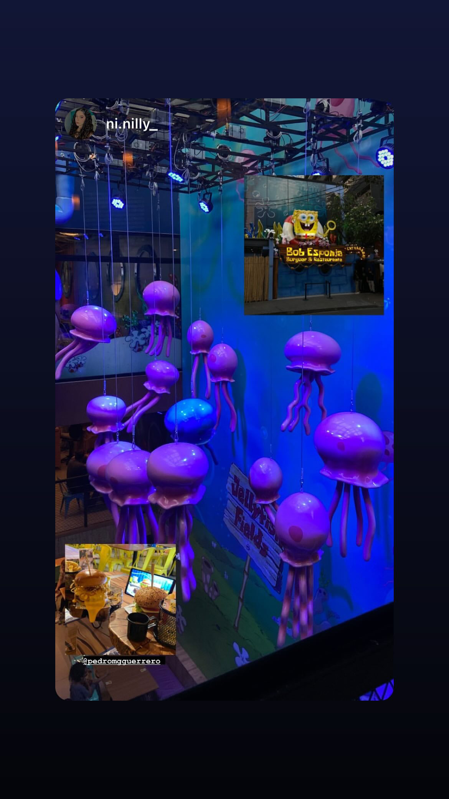
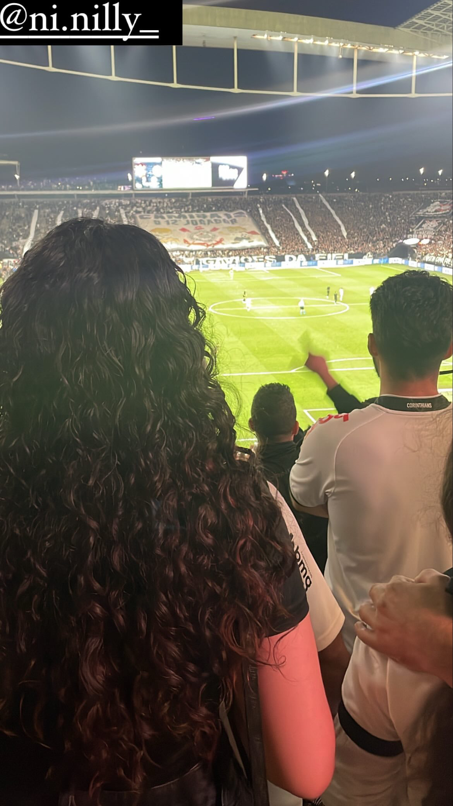
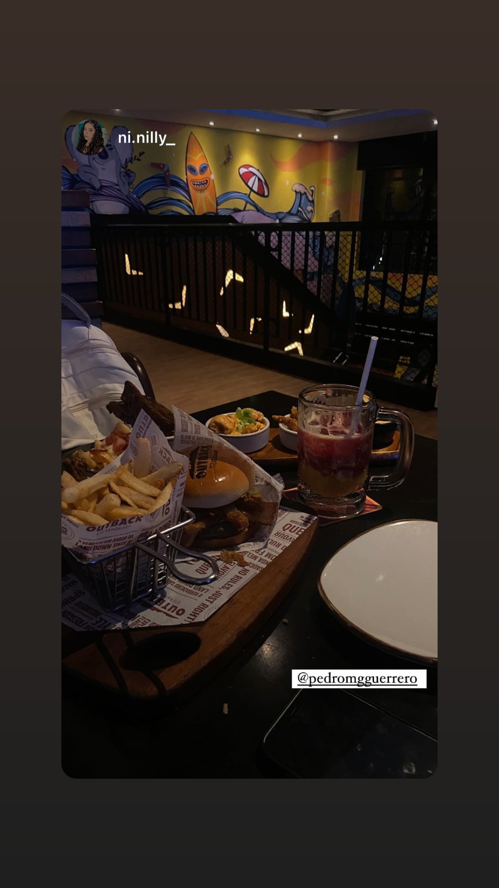
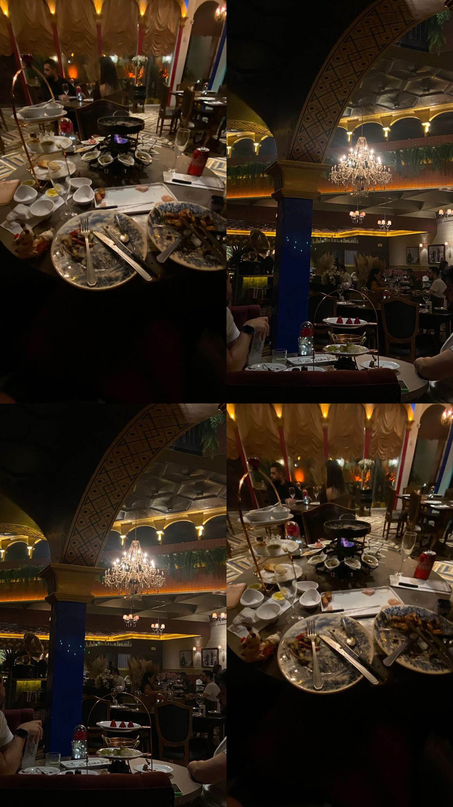
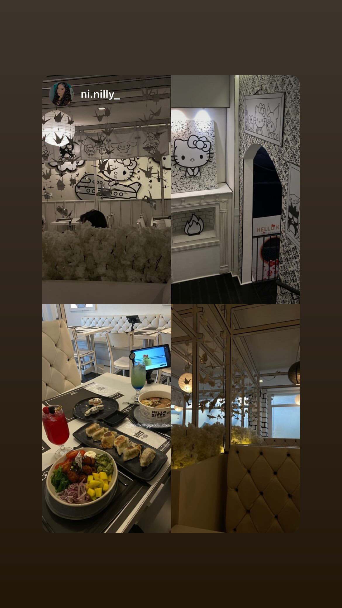
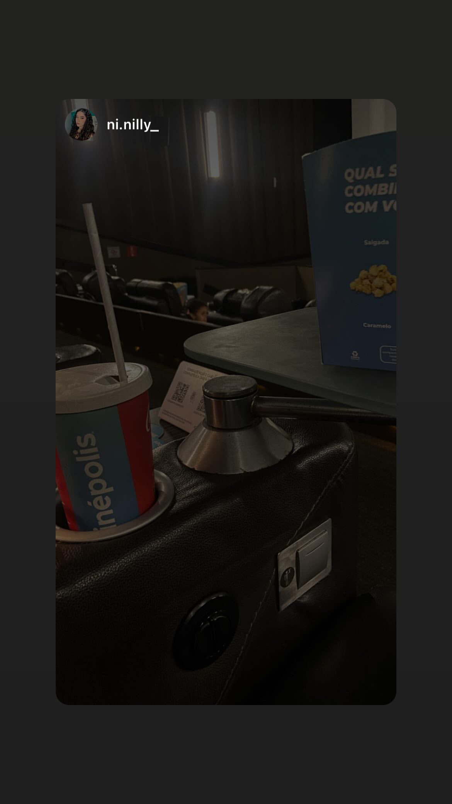
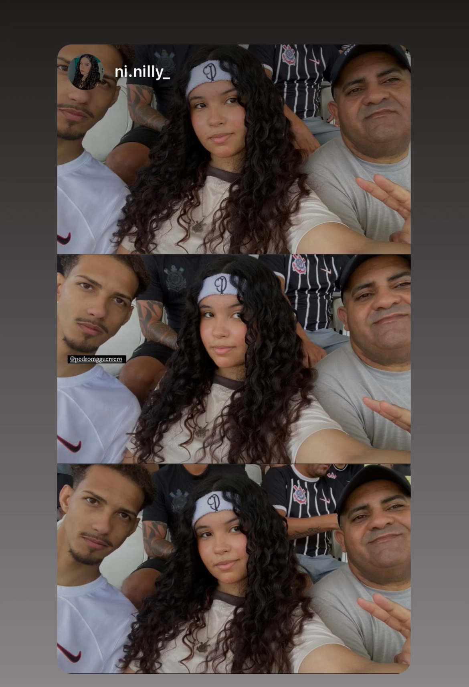

Nos encontramos para ver Bob Esponja no cinema. Foi uma noite divertida!

Dia de passeios e boas conversas. A nossa conexão se fortaleceu!

Jantar delicioso no Outback, muita risada e amor envolvido.

Nos divertimos muito em um encontro super especial!

O aniversário dela foi um momento inesquecível, cheio de carinho.
Meu aniversário foi um dia super especial, compartilhado com ela!

Almoçamos em um restaurante lindo, com decoração da Hello Kitty, tudo perfeito!

Mais um cinema juntos, mais uma noite divertida!
A primeira foto dela sozinha, uma das primeiras que adorei.
O sorriso dela, que marcou meu coração desde a primeira vez que vi.

5 de novembro, um dia cheio de surpresas e alegrias.

A foto dela com o pai, um momento tão importante na vida dela.